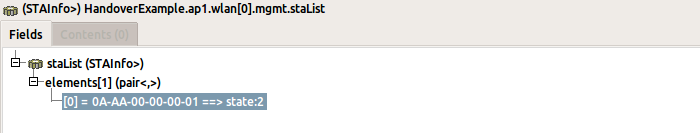

This example simulation demonstrates the handover between two access points (APs) in an 802.11 wireless LAN using infrastructure mode. The network contains two APs, placed 400 meters apart, and a wireless host. The host moves out of range of one access point and into the range of the other. The goal is to show how the handover takes place between the two APs.
In 802.11 infrastructure mode, wireless hosts need to be associated with an access point before data exchange can occur. The hosts can find an access point in two ways. One is active scanning, where the hosts transmit Probe Request frames, and the APs reply to these with Probe Response frames. The other is passive scanning, where the hosts locate APs by receiving the Beacon frames sent by the APs. APs emit Beacon frames periodically, announcing their presence (unless configured to be hidden). In this simulation, the host uses active scanning.
When the host has discovered the available APs, it decides which one to join. In the INET 802.11 model, it chooses the one which has the strongest signal. Once the hosts wants to join an AP, the authentication process begins. The AP checks if the host has the necessary privileges, ie. the host knows the password for the AP. After the host is authenticated, it starts the association process. During the association process, the capabilities of the AP and the host are exchanged. When it is complete, the data exchange can begin.
In this simulation there will be no data exchange, because there are no applications (ie. UDPApp) configured in the hosts to send or receive data. The host will just be associated to the APs, and keep receiving beacon frames.
The network
The example simulation uses to following network:
Configuration
The two access points are set to use the channels 2 and 3. The management module is set to scan 5 channels, so it will scan channels 0 to 4.
At the beginning of the simulation, the host starts to scan the channels, looking for an access point to associate with. This process is started by the host's agent module, as it is set to active scanning.
During the scanning process, the host sends a Probe Request frame in each channel starting from channel 0, until it receives a Probe Response. As ap1 is on channel 2, the host sends out three Probe Requests before it gets a Probe Response. This is shown in the following packet log.
When the host gets the Probe Response, it initiates the authentication process. After that is completed, it starts the association process. The authentication process consists of several steps. When it becomes associated with ap1, a text bubble appears at the host indicating that it is associated with the AP. The authentication and association processes are shown in the packet log below.
This animation shows the handover.
The dotted arrows indicate recent successful physical layer transmissions. In this example, they will be used to visualize that the host is associated with an AP. The APs send out beacon frames periodically, which is now configured to be 100 ms. These frames are received by the host, which constantly reinforce the physical link visualizer arrows. When the host is in range of ap1, the only communication is the host receiving ap1's beacon frames. This is indicated by the dotted arrow, which only goes from the AP to the host.
The host remains associated to ap1 as long as it's within communication range, even though it is also within the communication range of ap2 when it enters the area where the two APs' communication range circles overlap. As it leaves ap1's range, the host detects that it no longer receives ap1's beacon frames. A text bubble appears at the host indicating that it has lost the beacon. The scanning process is restarted by the host's agent module. This is triggered when several consecutive beacon frames are not received.
This time it takes four Probe Request frames to get a response, because ap2 is on channel 3.The host is handed over to ap2 using the same authentication and association process discussed earlier. It will remain associated to ap2 until it leaves ap2's communication range.
The host's mgmt module contains a variable that indicates which access point the host is associated to.
The mgmt modules of access points maintain a list of hosts that are associated with them.
